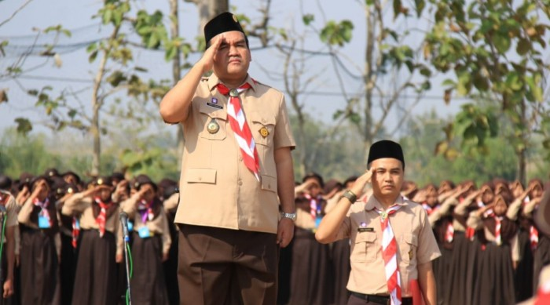

Pengertian Pramuka adalah nama organisasi kepanduan yang bertugas menyelenggarakan pendidikan di luar sekolah bagi anak-anak dan pemuda bangsa agar mereka memiliki ketangguhan, keberanian, memiliki kepribadian baik dan aktif dalam pembangunan di masyarakat.
Pramuka adalah singkatan dari Praja Muda Karana yang memiliki arti “Rakyat muda yang suka berkarya”. Di Indonesia gerakan ini diperkenalkan secara resmi pada 14 Agustus 1961 oleh Presiden Pertama Indonesia, Ir Soekarno.
Kegiatan kepramukaan mengambil lokasi outdoor atau alam terbuka. Para peserta melakukan aktivitas yang sehat, menyenangkan, mendidik, dan terarah. Semua berdasarkan metode dan prinsip kepramukaan.
Secara umum, Pramuka menjadi sebuah organisasi pendidikan di luar sekolah atau nonformal bagi generasi muda. Sistem yang digunakan bernama among dan menerapkan metode, moto, serta prinsip dasar.
Kepramukaan berfungsi sebagai pusat kegiatan menarik bagi anak-anak muda dan remaja. Semua aktivitas ini mengandung pendidikan sehingga amat berguna bagi para anggota. Karena maraknya permainan online, anak-anak jarang melakukan aktivitas di luar rumah. Pramuka menjadi sarana tepat untuk mengenalkan mereka pada alam dan bermacam keterampilan. Kepramukaan memberikan hiburan sekaligus pendidikan bagi para pelakunya. Ini dapat menggantikan segala jenis permainan dan memberi bekal kemampuan kepada para remaja.
Pramuka bagi orang dewasa lebih bersifat pada pengabdian. Artinya, para anggota yang telah dewasa tidak berfokus pada permainan lagi melainkan menjalankan tugas pembinaan. Tugas tersebut harus dilandaskan pada keikhlasan, pengabdian, dan kerelaan. Artinya, mereka melakukannya secara sukarela dan berdasar pada tujuan organisasi. Bagi para anggota dewasa, kepramukaan melatih rasa tanggung jawab dan menerapkan tugas pembinaan secara terstruktur. Semua harus sesuai metode, sistem, dan prinsip yang ada.
Pramuka berfungsi sebagai sebuah organisasi atau alat bagi masyarakat. Selain itu, para anggota siap sedia membantu warga sekitar dalam berbagai keperluan. Di masyarakat, Pramuka menjadi sebuah alat proses pendidikan. Akan tetapi, implementasi harus sesuai dengan kondisi, perkembangan, kebutuhan, dan situasi masyarakat.
Secara umum, kegiatan kepramukaan memiliki tujuan untuk menyiapkan generasi muda menjadi sosok yang mandiri, intelek, dan mudah beradaptasi di lingkungan luar sekolah. Melalui Pramuka, para anggota dapat mengembangkan dan memaksimalkan potensi mereka di banyak bidang, seperti fisik, sosial, spiritual, keterampilan, dan lain-lain. Secara khusus, dikutip dari pendidikanpedia beberapa tujuan kegiatan kepramukaan untuk Anda pahami.
Para anggota yang bergabung pada kegiatan Pramuka, baik anak-anak maupun dewasa, mampu mengasah karakter atau kepribadian mereka. Selain itu, Pramuka bertujuan membentuk akhlak yang mulia pada para anggotanya.
Melalui kegiatan Pramuka, para anggota dan generasi muda memperoleh rasa cinta tanah air dan bangsa. Mereka melatih rasa solidaritas dan kerja sama sejak dini.
Banyak kegiatan kepramukaan yang berguna bagi para anggotanya. Alhasil, mereka dapat menggali potensi dan mengembangkan keterampilan lebih jauh.
Selain berguna bagi diri sendiri, keterampilan-keterampilan tersebut juga berguna bagi masyarakat dan lingkungan sekitar. Beberapa contohnya dapat Anda baca di bawah.
Ada banyak jenis simpul dan tali temali. Semua bisa Anda pelajari melalui kegiatan Pramuka! Keterampilan ini berguna dalam bermacam keperluan, seperti memasang tenda, membuat tandu, memasang tiang bendera, dan lain sebagainya.
Pramuka mengajarkan kemampuan pertolongan pertama gawat darurat. Anda dapat menggunakan keterampilan ini untuk menolong orang sakit atau korban kecelakaan.
Kedua keterampilan ini melatih Anda menggunakan bahasa sandi. Semafor memanfaatkan media bendera kecil sedangkan morse menggunakan media beragam. Contohnya, morse melibatkan senter, peluit, pijatan, dan lain-lain.
Selain keterampilan-keterampilan di atas, para anggota bisa mengasah kemampuan lain. Ini termasuk membaca sandi Pramuka, penjelajahan, pengembaraan, tanda jejak, keterampilan baris-berbaris, dan membaca arah.
Ada beberapa tingkatan dalam Pramuka dan ini didasarkan pada usia, kemampuan, dan pengalaman para anggota.
| Pramuka siaga(7-10 Tahun |
|
|---|---|
| Pramuka Penggalang (11-15 Tahun) |
|
| Pramuka Penegak (16-20 Tahun) |
|
| Pramuka Pandega (21-25 Tahun) |
|
Awal mula Pramuka dunia terkait dengan buku karangan Baden Powell yang berjudul Scouting for Boys. Beliau mencatat semua pengalaman dalam sebuah buku seputar dunia perkemahan. Pada permulaan, buku karya Baden laris di Inggris. Karena popularitas yang meningkat, bukunya juga dikenal dan laris di negara-negara lain! Alhasil, banyak organisasi Pramuka bermunculan. Adik Baden bahkan memiliki organisasi sendiri, khusus untuk para wanita. Organisasi ini bernama Girl Guides. Organisasi khusus untuk usia siaga muncul pertama kali pada tahun 1916, yang bernama CUB. Dua tahun setelahnya, ada Rover Scout yang merupakan organisasi Pramuka untuk usia remaja. Baden memiliki satu buah karya lagi yang menginspirasi dunia kepramukaan dunia. Buku ini berjudul Rovering to Success! Buku ini berkisah tentang perjalanan dan petualangan seorang pemuda. Jambore dunia pertama kali diadakan di London pada tahun 1920. Pesertanya sebanyak 800 orang dan ada setidaknya 34 negara yang ikut serta dalam acara ini. Pada acara jambore dunia tersebut, Baden Powell menjadi The Chief Scout of the World atau Bapak Pandu Sedunia. Pada tahun 1920 di kota yang sama, muncul Dewan Internasional yang memiliki anggota sembilan orang. Sebelumnya, kantor kesekretariatan Pramuka sedunia berada di London, namun pindah ke Ottawa di tahun 1958. Sepuluh tahun kemudian, kantor berpindah ke Swiss.